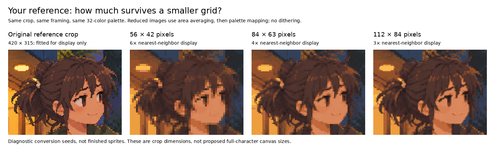

Pixel Art Reference Lab
Preserve the character, aesthetic and expression. Use additional generated references when needed. Test tracing, conversion and hybrid native construction—not exact raster copying.
Continue with the agent
Workspace integration plan
First controlled comparison
Reference-to-native workflow
Get the missing images
All image prompts in one file
Attachment and prompting instructions
Multi-reference animation workflow
Includes pose, head/expression, clean-reference, simplification, key-pose sheet and correction requests, plus the user-side fallback.
Evidence already available

Compare reduction methods · Original upload manifest · Inspected workspace state

Research
Findings and tradeoffs
Primary-source register
Art and technical review criteria
Offline tools
Usage and boundaries
Observed validation
Frame-layout template
Inspect images, make conversion seeds and normalize explicitly registered frames. No automatic artist, hidden paid API call or new model installation.
Validation boundary: 24 helper tests pass; current seed pixels reproduce three historical reductions. No new Aseprite drawing, generated pose, completed animation or Godot playback was performed for this kit.